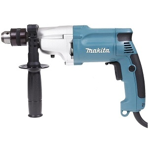

Дрель MAKITA DP4010

Дрель MAKITA DP4010 — это высокопроизводительный и надежный инструмент, предназначенный для сверления отверстий в металлических, деревянных, керамических и прочих строительных материалах. Наличие двух механических скоростей и электронной системы регулировки числа оборотов делают этот инструмент многофункциональным и удобным.
Основные характеристики
- Мощность: 720 Вт;
- Количество оборотов: 0-1200 об/мин; 0-2900 об/мин;
- Тип патрона: БЗП;
- Патрон: 13 мм;
- Диаметр сверления (дерево) (макс.): 40 мм;
- Диаметр сверления (металл) (макс.): 13 мм;
- Вес брутто: 3 кг;
- Вес нетто: 2,3 кг.
Подробное описание
Дрель MAKITA DP4010 — это мощный инструмент для сверления различных материалов. Инструмент незаменим при выполнении строительно-ремонтных работ разной степени сложности.
- С помощью этой дрели можно просверлить отверстия диаметром до 13 миллиметров в металлических поверхностях и до 40 миллиметров в деревянных.
- Двигатель мощностью 720 Вт обеспечивает высокую производительность и надежность.
- Двухступенчатый редуктор позволяет работать со скоростью 0-1200 оборотов в минуту на первой скорости и 0-2900 оборотов в минуту — на второй. Предусмотрена и система электронной регулировки числа оборотов, что позволяет получить максимальный результат при работе с материалами различной плотности. Корпус редуктора выполнен из металла, это обеспечивает механизму защиту как от механических повреждений, так и от перегрева.
- Быстрозажимной тринадцатимиллиметровый патрон, усиленный для промышленного применения, позволяет быстро менять рабочие насадки с помощью ключа.
- Расцепляющая муфта останавливает вращение сверла при его заклинивании, исключая рывок и обратный удар.
- Помимо отличных рабочих характеристик, дрель отличается повышенной маневренностью и удобством эксплуатации. Ее вес всего 2,3 кг, что позволяет выполнять продолжительные работы даже на вытянутой руке с минимальной усталостью. Корпус хорошо сбалансирован.
- Основная рукоятка эргономичной формы имеет прорезиненные антискользящие вставки. Дополнительная рукоятка оснащена ограничителем глубины сверления, что немаловажно, например, для выполнения аккуратных несквозных отверстий.
Похожие товары
Вам также могут понадобиться
- Насадки
- Кордщётки
- Респираторы
Все права защищены © Geekbrains